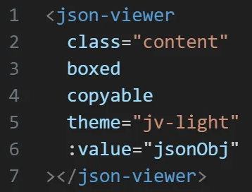
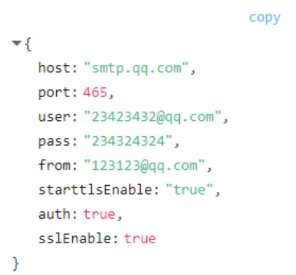
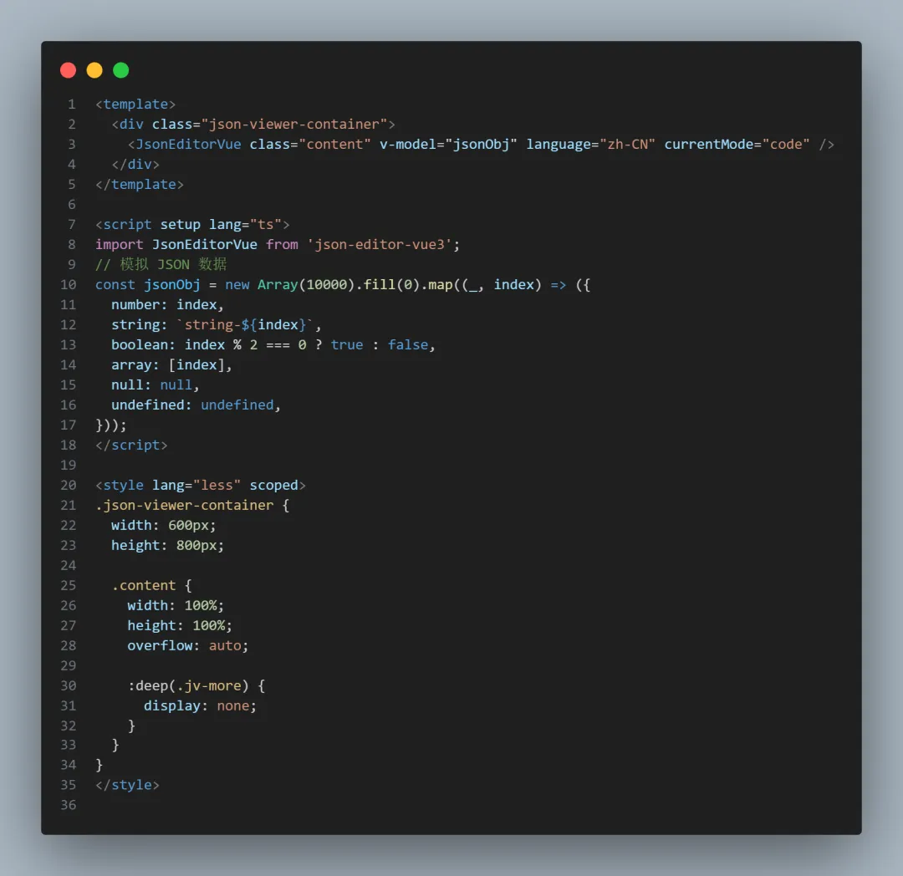

HaoTian · 2024-10-19 14:18:15
前后使用了两个 JSON 展示库，跟大家分享一下
首先需要安装这个库 vue3-json-viewer
pnpm install vue3-json-viewer
在 main 文件中全局引入
import JsonViewer from "vue3-json-viewer";
import "vue3-json-viewer/dist/index.css"; // 引入样式
app = createApp(App);
app.use(JsonViewer);
在页面中去使用
这个库展示 JSON 是挺好看的，看以下结果
但是它有一个缺点就是，它展示的 JSON 数据是延迟加载的，当数据多的时候，请看以下，这个库为了性能优化，所以当数据量大的时候，后面的节点都是采用 延迟加载的方式
虽然这样能优化渲染性能，但是有一个很大的缺点，那就是后面的节点无法被及时搜索到
因为产品经理说，使用者喜欢使用浏览器的 Ctrl + F掉出搜索框，来搜索缓存数据，但是如果延迟加载的话，那么后面的数据肯定无法被及时搜索到
考虑到上面那些之后，最后还是选择了 json-editor-vue3
pnpm install json-editor-vue3
import Vue from 'vue'
import JsonEditorVue from 'json-editor-vue3'
Vue.use(JsonEditorVue)
由于 json-editor-vue3 使用的是 commonjs 的方式，所以你直接在 Vite 项目中使用的话，会报错 does not provide an export named 'default'，不要慌，只需要按照下面去做
// vite.config.js
import { viteCommonjs } from "@originjs/vite-plugin-commonjs";
export default defineConfig({
plugins: [vue(), viteCommonjs()],
});
页面中使用
可以看到当 currentMode = "code"时，就是纯文本模式，这个时候，这个插件会帮我们一次性加载所有的 JSON 数据，而不是延迟加载，这样的话数据就能被使用者及时搜索到了！
而且这个库还提供了筛选、模式切换、全屏、编辑等实用功能